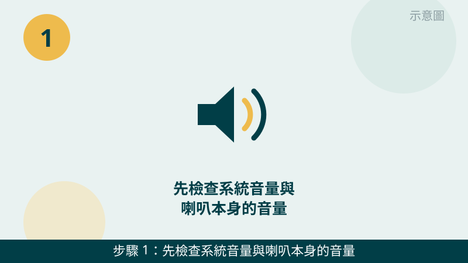
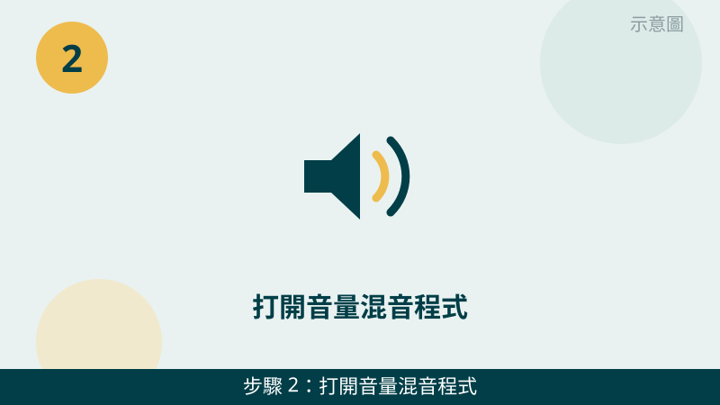
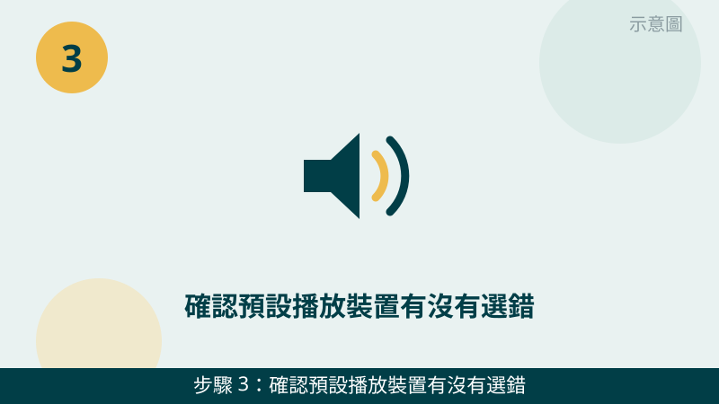
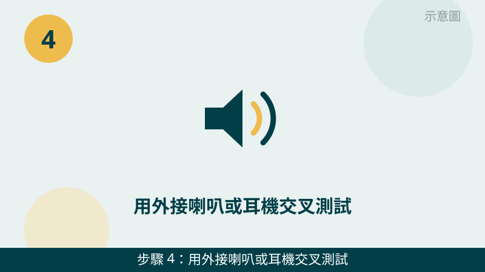
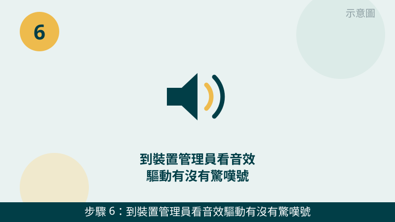

先跟您說明一個判斷原則：「完全沒聲音」和「某個程式沒聲音」是兩種故事。完全沒聲音，比較像是音量、輸出裝置或驅動的問題；只有某個程式沒聲音，比較像是該程式自己的音量被靜音了。您先分清屬於哪一種，檢查會快很多。
檢查時也請您留意：喇叭、耳機、螢幕和藍牙裝置都可能是聲音的出口，系統有時候會把聲音送到您沒想到的裝置上。下面的步驟就是幫您一個一個確認，聲音到底被送到哪裡去了。
沒聲音的狀況先傳給我們看
把音量設定、播放裝置畫面和外接耳機測試的結果拍下來傳 LINE，通常能先判斷是設定問題還是喇叭問題。先免費評估、報價透明，確認後再預約維修。
電腦沒聲音自救檢查清單（由簡到難）
- 1. 先檢查系統音量與喇叭本身的音量。請看右下角的音量圖示是不是被靜音或拉到很低，再確認外接喇叭自己的旋鈕、靜音鍵和電源是不是開啟的；筆電也請確認鍵盤上的靜音鍵沒有被誤觸。怎麼判斷：取消靜音、把音量調回來後就有聲音，就是音量問題；調了還是一樣，再往下查。

示意圖（非官方截圖） - 2. 打開音量混音程式，看個別程式是不是被靜音了。請在音量圖示上按右鍵，開啟「音量混音程式」，看正在播放的程式（例如瀏覽器、播放器、會議軟體）是不是被單獨靜音或音量被拉到最低。怎麼判斷：只有某個程式沒聲音、其他程式有聲音，多半就是這裡被靜音了；全部程式都沒聲音，再往下查。

示意圖（非官方截圖） - 3. 確認預設播放裝置有沒有選錯。請到 Windows 設定裡的「系統、音效」，看輸出裝置目前選的是內建喇叭、HDMI 螢幕、藍牙裝置還是耳機；接上 HDMI 螢幕時，聲音常常會被自動送到螢幕那邊。怎麼判斷：改回內建喇叭後就有聲音，就是輸出裝置選錯；改了還是一樣，再往下查。

示意圖（非官方截圖） - 4. 用外接喇叭或耳機交叉測試。請換一組確定是好的耳機或外接喇叭接上電腦，播放一段影片或音樂試聽。怎麼判斷：外接耳機或喇叭有聲音，問題多半在內建喇叭或輸出設定；外接也一樣沒聲音，問題多半在系統或驅動，請繼續往下查。

示意圖（非官方截圖） - 5. 檢查耳機孔是不是誤判成一直插著耳機。如果您剛拔掉耳機、但系統還顯示輸出是耳機，請把耳機再插拔一次、再完整重開機一次；耳機孔有灰塵時，可以用氣吹輕輕吹一下。怎麼判斷：插拔、重開後系統改回內建喇叭且有聲音，就是耳機孔誤判；如果還是一直顯示耳機，或不確定該怎麼處理，請先拍照問我們，不要用尖物去挖耳機孔。
示意圖（非官方截圖） - 6. 到裝置管理員看音效驅動有沒有驚嘆號。請在裝置管理員裡找到音效相關裝置，看旁邊有沒有黃色驚嘆號；有的話先試著按右鍵「停用裝置」再「啟用裝置」，或選「更新驅動程式」。怎麼判斷：驚嘆號消失、聲音恢復，就是驅動問題；如果您不確定該點哪一個裝置，請先拍照問我們，不要隨便解除安裝裝置。

示意圖（非官方截圖）
別再自己試了：出現這些情況，請先停手
- 喇叭出現破音、燒焦味或冒煙——請立刻停用、關機，不要再開大音量測試，先拍照問我們
- 電腦或喇叭曾經潑到液體——請先關機、不要再開機通電測試，先拍照問我們
- 想自己拆喇叭、拆機檢查音效線路但不確定怎麼拆——請先拍照問我們，不要硬拆
- 音量已經開到最大還是完全沒聲音，又伴隨機身發燙或異味——請先停用、關機，拍照問我們再決定下一步
如果您的電腦是接上電視或外接螢幕後才沒聲音，也建議把輸出裝置畫面拍下來傳給我們，常常只是聲音被送到螢幕那邊了。我們的檢測會把輸出設定、驅動與喇叭本身一起交叉比對，找出真正的問題再報價給您。
常見問題
耳機有聲音、內建喇叭沒聲音，是喇叭壞了嗎？
不一定。耳機有聲音只代表系統能正常出聲，內建喇叭沒聲音可能是輸出裝置選錯、耳機孔誤判，或內建喇叭本身的問題。請先照本文第 3 步和第 5 步檢查，排除設定原因後還是沒聲音，再往喇叭硬體方向查。
接上 HDMI 螢幕後電腦沒聲音，這樣正常嗎？
很常見，不一定是故障。接上 HDMI 螢幕或電視時，系統常常會自動把聲音輸出改成螢幕或電視，如果螢幕本身沒有喇叭，您就會覺得電腦沒聲音。請到音效設定裡把輸出改回內建喇叭，再試一次看看。
音效驅動顯示驚嘆號，可以自己重裝驅動嗎？
可以先試著重新啟用或更新驅動，步驟就是本文第 6 步的做法。如果您不確定該選哪一個裝置，或重裝後還是沒聲音，請先把裝置管理員的畫面拍下來問我們，不要隨便解除安裝裝置，以免越改越複雜。